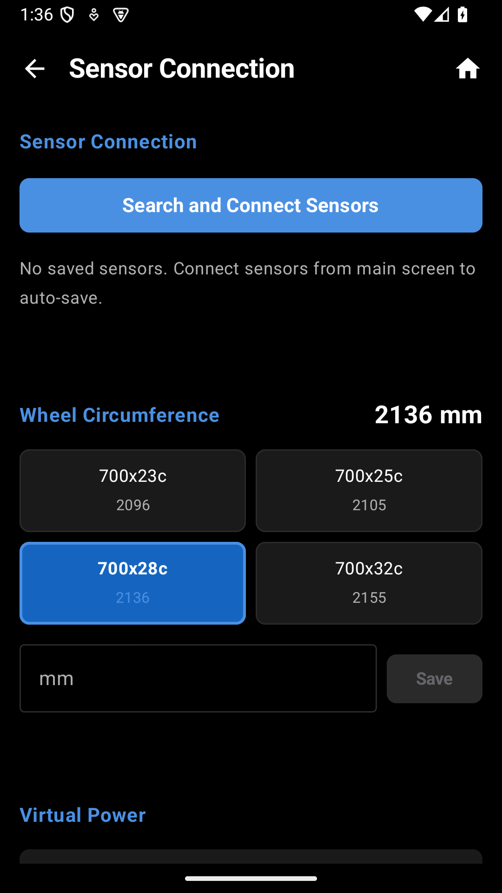

센서를 연결하면 GPS만으로는 얻을 수 없는 다양한 데이터 — 심박수, 파워, 케이던스, 기어 위치 등 — 을 실시간으로 확인할 수 있습니다. 센서가 없어도 GPS 속도/거리/고도는 정상적으로 작동합니다.

| 센서 유형 | 프로토콜 | 표시 데이터 |
|---|---|---|
| 속도/케이던스 (CSC) | BLE CSC Profile | 속도, 케이던스, 가상 파워 |
| 심박계 (HRM) | BLE HR Profile | 심박수, 심박 존 |
| 파워미터 | BLE Cycling Power | 파워, 페달 밸런스, 토크, 케이던스 |
| Shimano Di2 | BLE (커스텀) | 기어 위치, 기어 비, 배터리 |
| SRAM AXS | BLE (커스텀) | 기어 위치, 기어 비, 배터리 |
| 후방 레이더 | BLE Radar Profile | 차량 감지, 위협 수준, 접근 속도 |
| 액션캠 (GoPro) | BLE (GoPro Open API) | 배터리, 녹화, 모드 제어 |
| 액션캠 (DJI) | BLE (커스텀) | 배터리, 녹화, 모드 제어 |
센서를 처음 연결할 때 아래 순서로 진행합니다.
속도 센서(CSC) 사용 시 정확한 속도 계산을 위해 휠 둘레를 설정합니다. 타이어 규격에 맞는 값을 선택하거나 직접 측정한 값을 입력하세요.
| 타이어 규격 | 둘레 (mm) |
|---|---|
| 700x23c | 2096 |
| 700x25c | 2105 |
| 700x28c (기본값) | 2136 |
| 700x32c | 2155 |
| 사용자 입력 | 직접 입력 |